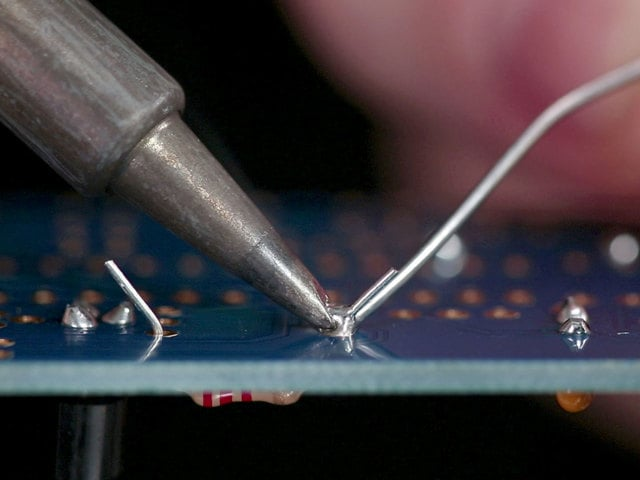
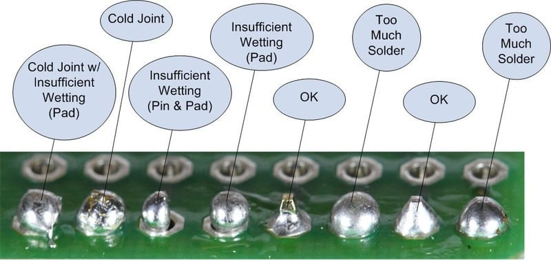

Hand Soldering
One iron, one joint at a time. This is the complete walkthrough — not just what to do, but what goes wrong at each step and how to fix it.
Before You Start
A bare, oxidized tip is the cause of most soldering frustration. The iron plating oxidizes fast at temperature. Oxidized tips don't transfer heat, don't tin, and nothing works. The rule is simple:
- Never leave a bare tip at temperature. If you're not actively soldering, the tip must have a solder coating on it.
- Before soldering: add sacrificial solder to the tip (just a blob), wipe it off on brass wool — this takes the oxides with it — then tin with fresh solder.
- After soldering: wipe the tip on brass wool, then immediately coat with fresh solder. The solder layer protects the plating from oxidation.
- End of session: wipe, coat with a generous blob of solder, then turn off. It cools with a protective solder shell.
Iron Setup
- Set temperature. SAC305 lead-free: start at 360°C. You'll adjust from there based on joint size.
- Wait for it to reach temp. Most stations take 30-60 seconds. The tip is oxidizing the whole time it's bare and hot — tin it as soon as it's hot enough to melt solder.
- Add sacrificial solder — melt a blob onto the tip. This isn't for soldering — it's to float out the oxides.
- Wipe on brass wool — takes the oxides and the sacrificial solder with it. The tip surface underneath is now clean.
- Tin the tip with fresh solder — apply a thin, even coat. It should look shiny and silver. This is your thermal bridge for soldering.
Brass wool is better than a wet sponge. A wet sponge cools the tip by 50-100°C on every wipe, and the thermal shock accelerates plating wear. Brass wool cleans without cooling. A dry cellulose cloth (ordinary washing cloth) also works well — a fast wipe removes residue effectively without cooling the tip.
The tip is oxidized. Signs: dark/black surface, solder balls up and rolls off the tip. Fix:
- Wipe aggressively on brass wool
- Apply flux directly to the tip face, then feed solder — the flux will dissolve the oxide layer
- If that fails: use a tip polish/tinner that contains tin powder in a flux medium (e.g. Hakko FS-100). Push the hot tip into it, twist, tin immediately.
- If the plating is worn through (reddish copper visible), the tip is dead. Replace it. No amount of tinning will save it — solder dissolves bare copper.
Avoid sal ammoniac blocks and tip tinners containing DAP (diammonium phosphate). Sal ammoniac is ammonium chloride — it's acidic enough to corrode the iron plating on your tip with every use. Many cheap tip tinners contain DAP, which actively eats the iron plating. A good tip tinner is tin powder + petroleum jelly + mild flux — no acids that attack the plating.
Workspace
- Ventilation — fume extractor or fan pulling fumes away from your face. Flux fumes aren't toxic at hobby levels but they irritate lungs over time.
- Helping hands or PCB holder — you need both hands free (one for iron, one for solder). A vise or PCB holder is not optional.
- Good light — you can't inspect joints you can't see. Desk lamp or headlamp.
- Flux pen or syringe — liquid no-clean flux. You'll use this more than you expect.
- Solder wick and/or solder sucker — for fixing mistakes. Get both.
Tip Shape Selection
The tip shape determines how much heat you can deliver and where. A wrong tip makes easy joints hard. The right tip makes hard joints easy.
| Shape | Contact Area | Best For | Avoid For |
|---|---|---|---|
| Chisel (D/screwdriver) | Large — flat face | Everything. Through-hole, SMD pads, desoldering. The default. | Nothing — this is the universal tip. |
| Bevel (C/hoof) | Large — angled flat | Drag soldering fine-pitch ICs. The angled face rides along the pin row. | Through-hole where you need to get into tight spaces between pins. |
| Knife / blade (K) | Medium — edge contact | Drag soldering, clearing bridges, working in tight quarters between components. | General through-hole — too little mass for large joints. |
| Conical / pointed (I/S) | Tiny — point contact | Very tight access where no other tip fits. Rare. | Almost everything else. This is the tip that comes in the box. Throw it in the drawer. |
| Micro-chisel (D series, ≤1mm) | Small flat face | Fine-pitch SMD passives (0402, 0201), rework in tight spaces. | Through-hole, connectors — not enough thermal mass. |
If you own one tip, make it a chisel — 2.4mm wide for general work, 1.6mm for mostly-SMD work. The flat face gives you maximum contact area (= maximum heat transfer), and you can use the corner for finer work. A chisel tip can do 90% of what every other shape does.
Tip Size vs Joint Size
Match the tip to the joint, not to the smallest thing on the board. A tip that's too small for the joint can't deliver enough heat — you compensate with more time, which burns flux and risks pad lift.
| Joint Type | Tip Width | Why |
|---|---|---|
| 0402-0603 passives | 0.8-1.6mm chisel | Matches pad size. Enough mass for quick joints. |
| 0805-1206 passives | 1.6-2.4mm chisel | Good contact on the pad without overlapping neighbors. |
| Through-hole (standard) | 2.4-3.2mm chisel | Contacts both pad and lead with the flat face. The workhorse. |
| Through-hole (large pads, connectors) | 3.2-4mm chisel | More thermal mass for large copper areas. |
| Ground plane connections | 3.2mm+ chisel | Biggest tip you can fit. The ground plane is a heat sink — fight it with mass. |
| Drag soldering (0.5mm pitch) | 2-3mm bevel or knife | Angled face slides along pins. Solder separates by surface tension. |
| Drag soldering (0.65mm pitch) | 2.4mm chisel or bevel | Wider pitch is more forgiving — chisel works fine. |
Most soldering irons ship with a conical (pointed) tip. Beginners assume this is the right tip because it looks precise. It's the worst general-purpose tip — point contact means almost no heat transfer. The tip touches the joint at a single point instead of a flat face, so heat delivery is a fraction of what a chisel provides. New solderers then blame the iron, turn up the temperature, burn the flux, and get bad joints.
Switch to a chisel tip immediately. It's the single cheapest improvement you can make.
Tip Geometry and Heat Transfer
The thermal path from heater to joint has three links, and tip shape affects the last two:
- Heater → tip body — could be a ceramic element, a cartridge with integrated heater, induction via the Curie effect, a gas flame, or a copper piece heated in a fire. The physics don't care — heat is heat. Fancier stations recover temperature faster, but the thermal path from tip body to joint is the same regardless.
- Tip body → tip face — a thick, short tip conducts heat to the working face faster than a long, thin one. This is why conical tips are bad: the taper restricts the thermal cross-section.
- Tip face → joint — contact area. A 2.4mm chisel flat face touching a pad transfers heat across the entire contact area simultaneously. A conical tip touching the same pad transfers through a ~0.1mm circle. The chisel delivers roughly 20× more heat per unit time through contact area alone.
Adding a small bead of solder to the tip before touching the joint (a "thermal bridge") fills air gaps between the tip face and the joint surfaces, further increasing the effective contact area. This is why you tin the tip — not just for oxidation protection, but for heat transfer.
Through-Hole Soldering
The foundation. If you're learning, start here.
Step 1: Insert Component
- Push leads through the holes from the component side
- Bend leads slightly on the solder side (10-15°) to hold the component in place
- Component should sit flush against the board (unless intentionally raised)
- Lead won't fit the hole — don't force it. Check you have the right footprint. If the lead is very slightly too thick, a gentle squeeze with pliers can help — but never force-fit or you'll damage the plating inside the barrel.
- Component falls out when you flip the board — bend leads more, or tape component in place with kapton tape.
Step 2: Heat the Joint
- Place iron tip so it touches both the pad and the lead simultaneously
- Use the flat face of a chisel tip — maximum contact area = maximum heat transfer
- Hold for 1-2 seconds to let the pad and lead come up to temperature
Photo: Iron contact on pad and lead

Pressing the iron harder against the pad does not transfer more heat. What transfers heat is contact surface area between tip and workpiece. Use the flat face of a chisel tip, not the point. And add a small bead of solder to the tip before touching the joint — the molten solder fills air gaps and acts as a thermal bridge, dramatically improving heat transfer.
Pressing hard on the tip can actually cause damage: on irons where the tip sits on a ceramic heater element, force on a loose tip transmits directly to the ceramic and can crack it.
- Only touching the lead, not the pad — solder will wet the lead but not the pad. You get a "cold" joint that looks soldered but isn't bonded to the board.
- Only touching the pad, not the lead — opposite problem. Solder flows around the lead without bonding to it.
- Pad connected to ground plane — iron can't bring it to temp — switch to a bigger tip, turn up to 380-400°C, or preheat the board. See Preheat.
Step 3: Feed Solder
- Touch solder wire to the junction where the iron, pad, and lead meet
- Do not melt solder onto the iron tip and try to carry it to the joint — it won't transfer
- Feed enough solder to form a concave fillet around the lead — typically 1-2mm of wire for a standard through-hole joint
- The solder should wick around the lead and fill the barrel. You'll see it flow.
- Solder balls up on the tip, won't flow to the joint — the pad/lead isn't hot enough yet. Wait another second. If still nothing, the pad is oxidized — add flux.
- Solder flows but only on one side — iron isn't contacting both surfaces. Reposition.
- Solder disappears into the hole with no visible fillet — you need more solder. The barrel is wicking it all up. Keep feeding until you see a fillet form on top.
- Too much solder — big blob — don't panic. Remove solder wick (see Desoldering below), apply flux, redo.
Step 4: Remove
- Remove solder wire first — pull it away from the joint
- Then remove iron — pull straight away, don't drag
- Don't move anything — hold the board and component still for 2-3 seconds while the joint solidifies
- Total iron contact time should be 2-5 seconds. If it took longer, you need more heat next time.
- Pulled iron away too slowly — icicle/spike — cosmetic issue mostly. Can be remelted with a touch of the iron + flux.
- Board moved during solidification — disturbed joint — rough, cracked surface. Reheat with flux and hold still this time.
- Pad lifted — too much heat for too long. The adhesive between copper and FR4 weakens well above Tg (130-180°C for standard FR4) and can fail with prolonged exposure. If the trace is still connected, you can still use the joint. If the pad tore off completely, you'll need a bodge wire.
Step 5: Inspect
- Good joint: smooth concave fillet, solder feathers onto pad, lead visible at top
- Wetting angle < 90° (ideally < 30°)
- Lead-free: matte/satin finish is normal — don't rework good joints
- Check the solder side AND the component side — barrel should have visible solder
Figure: Good vs bad joints — the full spectrum

Step 6: Trim Leads
- Cut leads flush with the top of the solder fillet using flush cutters
- Cut after soldering, not before — the lead sticking through gives you something for the solder to fillet against
- Point cutters away from your face — leads fly
SMD Soldering (Individual Components)
For passives (0805, 0603, etc.) and small ICs. For fine-pitch ICs, see Drag Soldering below.
Step 1: Tin One Pad
- Apply a small amount of solder to one pad only
- This creates a solder "pillow" to tack the component to
Step 2: Place Component
- Hold component with tweezers
- Remelt the solder pillow with the iron
- Slide the component into position while the solder is molten
- Remove iron, hold component still until solder freezes
- Check alignment. The component is tacked on one end — you can reheat and nudge it.
- Component tombstones (stands up on one end) — too much solder on the pillow pad, or component not centered. Remove, clean pads with wick, start over.
- Component slides off-center — tweezers slipped. Reheat the tack joint and reposition. This is why you only solder one pad first.
- Solder won't melt the pillow — component lands on solid solder — add flux to the pad. The pillow may have oxidized.
Step 3: Solder Other End(s)
- Apply flux to remaining pad(s)
- Heat pad and component termination simultaneously
- Feed solder — small amount, you want a fillet not a blob
Step 4: Reflow First Joint
Go back to the tack joint and reflow it with a touch of fresh solder and flux. The tack joint was made with the component being positioned — it may not have perfect wetting.
Drag Soldering (Fine-Pitch ICs)
For QFP, SOIC, TSSOP — anything with a row of pins on 0.5-0.65mm pitch.
- Align and tack — flux the pads, position the IC precisely, tack two opposite corner pins
- Verify alignment — check every pin lines up with its pad. Realign now or suffer later.
- Flood with flux — apply generous flux across all pins. More than you think.
- Load the tip — apply a small amount of solder to a bevel or chisel tip
- Drag — slowly drag the tip across the row of pins at a slight angle. The flux + surface tension will separate the solder between pins.
- Inspect for bridges — check under magnification. Bridges are normal with drag soldering.
- Fix bridges — more flux + drag a clean tip through the bridge. Or flux + solder wick.
It's not. The flux does the work. Surface tension naturally separates solder between pins when there's enough flux. Your first attempt will probably have a bridge or two — that's fine, they fix in seconds. Practice on a dead board first.
Many YouTube soldering demos use a mix of flux and solder paste with a very low ratio of tin — essentially a thin, tacky paste that's mostly flux with just enough solder particles to form the joint. You apply it liberally across all pins, then drag the iron through. The heavy flux content prevents bridges while the sparse solder wets each pin individually. This is especially effective on 0.4-0.5mm pitch QFPs where standard drag soldering needs more precision.
You can buy this commercially as "tacky flux" or make it by mixing a small amount of solder paste into liquid flux until it has a thin, paste-like consistency.
- Bridges everywhere — not enough flux. Seriously, add more flux. Then drag a clean tip through.
- Pins not wetting — flux has burned off, or pads are oxidized. Clean with IPA, re-flux, try again.
- IC shifted during dragging — wasn't tacked well enough. Desolder, realign, tack more pins before dragging.
Wire Soldering
Connecting wire to pads, terminals, or other wire.
Wire to Pad
- Strip wire end — expose 2-3mm of conductor
- Tin the wire end — hold iron to wire, feed solder until it wicks into the strands
- Tin the pad — apply thin solder coating
- Hold tinned wire against tinned pad, heat both with iron until solders merge
- Remove iron, hold still
Wire to Wire
- Strip both ends
- Tin both ends
- Hold tinned ends together (mechanical connection or helping hands)
- Apply iron and a small amount of fresh solder to bridge them
- The joint should flow together into one smooth fillet
- Solder won't wick into stranded wire — wire is oxidized or coated (enamel, lacquer). Scrape/sand the coating off first, then flux heavily.
- Wire insulation melting back too far — iron too close to insulation. Use a thermal shunt (clip a heatink or alligator clip between the iron and the insulation) or work faster.
- Cold joint where wires meet — both wires need to be at temp. Hold iron against both simultaneously.
Desoldering
Removing solder from joints. Essential for rework.
Solder Wick (Braid)
- Apply flux to the wick and to the joint
- Place wick on top of the joint
- Press iron on top of the wick — heat flows through the wick into the joint
- Solder will wick up into the braid by capillary action
- Remove iron and wick together — don't lift the wick while it's cold or you'll rip the pad off
- Use fresh section of wick for each joint
- Wick doesn't absorb solder — not enough flux, or iron isn't hot enough. Add flux to both wick and joint. Use a bigger tip.
- Pad lifted when removing wick — wick cooled down and soldered itself to the pad. Always remove iron+wick together while still hot.
- Solder remains in the barrel — wick can only reach what it contacts. For through-holes, work from both sides, or use a solder sucker.
Solder Sucker (Desoldering Pump)
- Cock the sucker (pull plunger back)
- Heat the joint until solder is fully molten
- Place sucker tip right at the joint
- Trigger — the vacuum sucks molten solder out
- Repeat if needed — often takes 2-3 passes for through-hole joints
When to Use Which
| Method | Best For | Weakness |
|---|---|---|
| Solder wick | SMD pads, cleaning up excess, precision work | Slow on through-holes with full barrels |
| Solder sucker | Through-hole removal, clearing barrels | Imprecise, can't get into tight spaces |
| Hot air + tweezers | SMD component removal | Risk of heating neighbors |
Tip Maintenance
A bad tip makes everything harder. Most "my iron sucks" complaints are actually tip care problems.
The Cycle (Every Joint)
- Before the joint: wipe on brass wool, verify tin coating is shiny. If not, add solder, wipe, re-tin.
- Solder the joint (2-5 seconds)
- After the joint: wipe on brass wool, re-tin immediately. The solder coating protects against oxidation.
Pausing (30 seconds to 5 minutes)
- Tin the tip generously and rest it in the holder
- When you come back: add sacrificial solder, wipe, re-tin, continue
- If the tip sat bare for even a minute at 360°C, it may need flux + aggressive cleaning to re-tin
End of Session
- Wipe tip on brass wool
- Apply a thick coating of solder — more than you'd use for a joint
- Turn off the iron
- Let it cool with the solder shell on. This protects the iron plating from oxidation while stored.
Recovery: Badly Oxidized Tip
- If tip is dark but plating intact: flux directly on tip face, feed solder aggressively, wipe, repeat 2-3 times
- If that fails: use a tin-powder tip polish (e.g. Hakko FS-100). Push tip in, twist, pull out, tin immediately.
- If tip is pitted or copper is visible: replace the tip. Solder dissolves bare copper, making the damage accelerate.
When the quick recovery fails, this procedure restores the alloy layer in the iron plating:
- Set station to 300°C (~575°F) — lower than working temp to minimize further oxidation during the process
- Apply flux-cored solder or tip polish to the tip face
- Remove the solder with a damp sponge (use deionized or distilled water only — tap water leaves mineral deposits on the tip surface)
- If carbonized residue won't wipe off, use a polishing bar
- Repeat steps 2-4 a total of 3-5 times
- Apply a final coat of solder and leave it undisturbed on the tip for 10 minutes — this allows the tin-iron alloy layer to reform properly
- Apply fresh solder, wipe off excess
- Let tip cool completely, then clean any flux residue with IPA
This is a recovery procedure, not routine maintenance. If a tip requires this regularly, you're running too hot or leaving tips bare at temperature.
With proper care (always tinned, brass wool or dry cellulose cloth not wet sponge, stored with solder coating): months to years of daily use.
With bad care (left bare at temp, wet sponge, stored clean): days to weeks before the plating fails.
The single biggest factor: never leave a bare tip at temperature. Even 30 seconds of bare exposure at 360°C causes measurable oxidation.
Iron Quality Matters
Thermal recovery = how fast the tip returns to set temperature after heat is drawn away.
- Cheap irons: slow recovery, tip temp swings wildly, inconsistent joints
- Quality stations (Hakko FX-888D, Weller WE1010): fast recovery, stable temp
- JBC/Metcal cartridge design: tip IS the heater element, sensor at contact point — fastest recovery in the industry
- A $100 Hakko station will produce better joints than a $30 iron in the hands of the same person
Cleanup & Inspection
Flux Residue
- No-clean flux: can be left on if no conformal coating. Cosmetically ugly but electrically fine.
- Rosin/RMA flux: optional cleanup. IPA (isopropyl alcohol 99%+) and a brush.
- RA / Water-soluble flux: must clean. RA: IPA or specialized cleaner. Water-soluble: deionized water within 1 hour of soldering.
- Why clean? Uncleaned active flux residue is conductive when humid — causes corrosion, dendritic growth, and eventual shorts.
Cleaning Procedure
- Apply IPA (99%) with a brush or cotton swab
- Scrub gently — the flux will dissolve
- Wipe with lint-free cloth or let air dry
- For stubborn residue: soak 30 seconds, scrub, repeat
- Under BGA/QFN: ultrasonic cleaning or spray wash — you can't reach under there with a brush
Visual Inspection
- Inspect every joint under good lighting
- 10X magnification for fine-pitch work (jeweler's loupe or USB microscope)
- Check: concave fillet? smooth transition to pad? no bridges? no icicles?
- Flip the board — check component side for through-hole barrel fill
- Gently tug components — a good joint doesn't move
A $15 USB microscope will show you things you can't see with the naked eye. Cold joints, hairline bridges, poor wetting — all invisible at arm's length but obvious at 20X. Buy one.